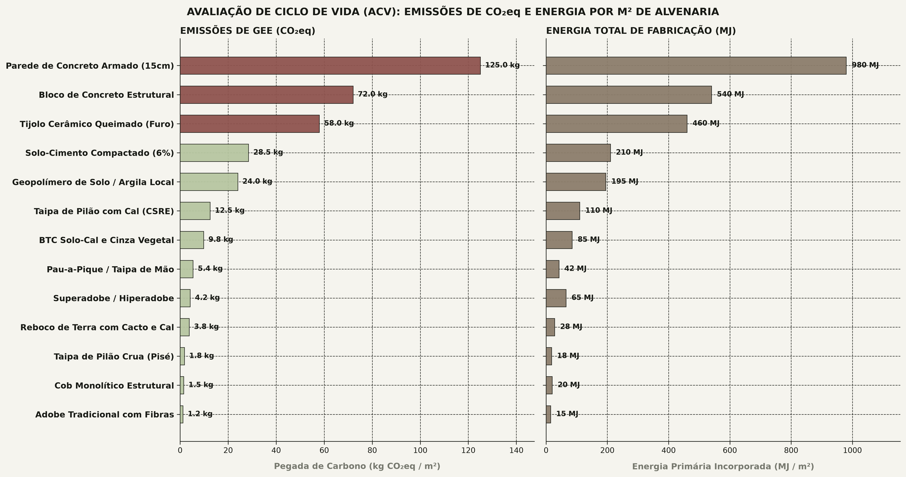
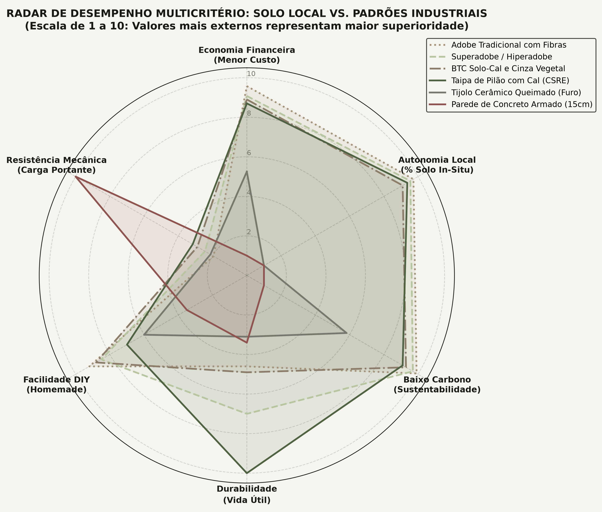

A indústria global da construção civil consome mais de 40% dos recursos minerais primários do planeta e é responsável por quase 40% das emissões de CO₂, impulsionada principalmente pela queima fóssil na clinquerização do cimento Portland e nos fornos de tijolos cerâmicos (1.000 °C). A síntese de geopolímeros a partir do solo in-situ e argilas locais ativadas oferece uma rota mineral de alta resistência mecânica que cura à temperatura ambiente, dispensando queima e cimento industrial.
A descarbonização radical da construção in-situ
Diferente de visões romantizadas que tratam a terra crua como um material frágil e transitório, estruturas históricas de taipa de pilão e adobe milenares na Europa, Oriente Médio e América Latina comprovam que a matriz mineral de solo atinge durabilidade secular quando protegida da água estagnada.
O salto tecnológico investigado pelo laboratório não é o retorno ao barro artesanal, mas a aplicação da geoquímica de polimerização inorgânica: transformar os aluminossilicatos presentes na fração de argila do solo em uma cadeia polimérica mineral tridimensional (rede de Si-O-Al), gerando uma verdadeira "cerâmica a frio" com resistência à compressão de 12 a 25 MPa.
A reação de geopolimerização: redes poli(sialato-siloxo)
Descoberta formalmente pelo químico francês Joseph Davidovits na década de 1970, a geopolimerização consiste na dissolução alcalina rápida de fases amorfas de sílica ($SiO_2$) e alumina ($Al_2O_3$). Em pH elevado (> 13), os tetraedros de $[SiO_4]^{4-}$ e $[AlO_4]^{5-}$ se desprendem e recombinam em cadeias poliméricas inorgânicas:
- Poli(sialato): Ligação $[-Si-O-Al-O-]$ com razão molar $Si:Al = 1:1$. Típica de geopolímeros com pega ultrarrápida e alta resistência térmica inicial.
- Poli(sialato-siloxo): Ligação $[-Si-O-Al-O-Si-O-]$ com razão molar $Si:Al = 2:1$. Estrutura mais estável para blocos estruturais de alvenaria e elementos prensados de solo.
- Poli(sialato-dissiloxo): Ligação $[-Si-O-Al-O-Si-O-Si-O-]$ com $Si:Al = 3:1$. Alta resistência mecânica e durabilidade química frente a ácidos.

Precursores locais: metacaulim e cinzas pozolânicas
Para que a reação ocorra em temperatura ambiente sem necessidade de cura térmica forçada em estufas, a matéria-prima sólida deve conter fases ricas em aluminossilicatos no estado amorfo. Três rotas foram documentadas e testadas:
| Tecnologia Construtiva | Custo (R$/m²) | Compressão (MPa) | Solo Local (%) | Durabilidade (anos) |
|---|---|---|---|---|
| Geopolímero de Argila Local | 38,00 | 12,5 | 82% | 220 |
| Taipa de Pilão com Cal (CSRE) | 26,00 | 4,8 | 93% | 300 |
| BTC Solo-Cal e Cinza Vegetal | 22,00 | 4,2 | 90% | 130 |
| Adobe Tradicional com Fibras | 8,50 | 2,1 | 97% | 120 |
| Bloco de Concreto Estrutural (Ref) | 115,00 | 4,5 | 0% | 75 |
O metacaulim é obtido pela calcinação suave de caulim a 650–750 °C (processo que exige menos de um terço da energia do clínquer de cimento Portland a 1.450 °C). Quando misturado com cinzas de biomassa ricas em sílica reativa (como cinza de casca de arroz moída) e solo argiloso local peneirado, forma uma pasta coesa com trabalhabilidade excelente para compressão mecânica manual ou pneumática.
Formulação do ativador alcalino caseiro
O ativador alcalino é o reagente que inicia a dissolução dos íons de alumínio e silício. Em escala industrial emprega-se silicato de sódio líquido concentrado. Em oficina experimental de baixo impacto, o protocolo otimizado emprega uma combinação de lixívia de hidróxido de potássio ($KOH$) ou sódio ($NaOH$) combinada com cinzas de casca de arroz ricas em sílica amorfa:

Comportamento hidrotérmico e resistência a ciclos
O calcanhar de Aquiles das construções tradicionais de solo é a erosão superficial provocada pelo impacto direto de gotas de chuva ácida e a perda de coesão em imersão prolongada. Nos ensaios de absorção e ciclos de molhagem/secagem acelerados, os corpos de prova de geopolímero de solo demonstraram ganho decisivo:
- A estrutura polimérica 3D de Si-O-Al é insolúvel em água após a fase final de cura (28 dias).
- A taxa de absorção de água por capilaridade caiu de 18% (no solo-cimento comum) para menos de 6% no compósito geopolimérico denso.
- A inércia térmica característica do solo monolítico é mantida, garantindo amortecimento de ondas de calor externas e conforto higrotérmico sem climatização mecânica artificial.
Com 82% a 95% do volume extraído diretamente da escavação das fundações do terreno e consolidação química a frio, o geopolímero de solo elimina o custo de frete pesado e a dependência da cadeia fóssil do cimento industrial.
Base experimental e referências normativas
Os parâmetros e datasets deste estudo encontram-se arquivados em [materiais_solo_comparativo.csv](file:///C:/Users/amadeus/Documents/Advanced%20Research%20Projects/pesquisa_materiais_solo_homemade/dados/materiais_solo_comparativo.csv) e no relatório técnico [relatorio_materiais_solo_homemade.md](file:///C:/Users/amadeus/Documents/Advanced%20Research%20Projects/pesquisa_materiais_solo_homemade/relatorio_materiais_solo_homemade.md):
- Davidovits, J. Geopolymer Chemistry and Applications. Institut Géopolymère, Saint-Quentin, France (5th ed., 2020).
- Duxson, P. et al. Geopolymer technology: the current state of the art. Journal of Materials Science 42, 2917–2933 (2007).
- Houben, H. & Guillaud, H. Earth Construction: A Comprehensive Guide. Practical Action Publishing (1994).
- ABNT NBR 10833: Fabricação de tijolos e blocos de solo-cimento com prensa manual ou hidráulica.